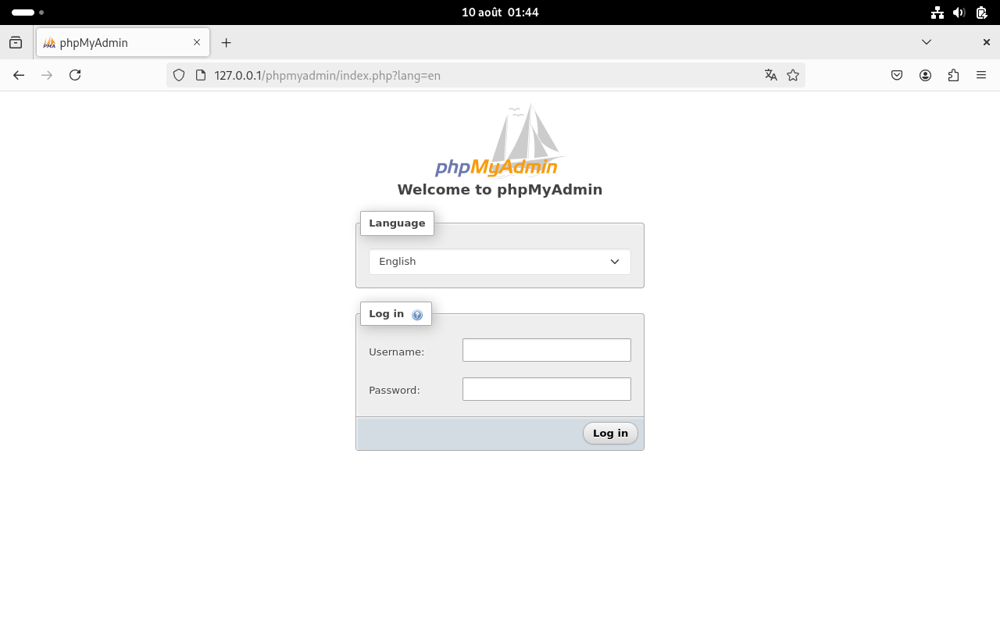
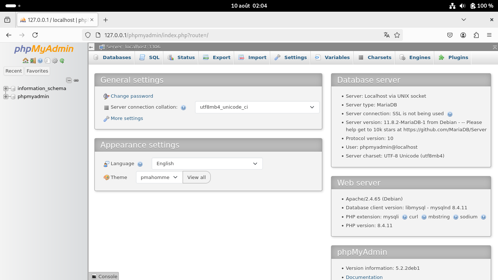
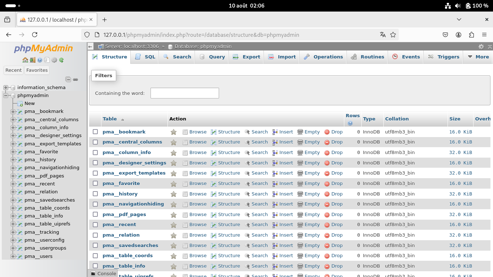
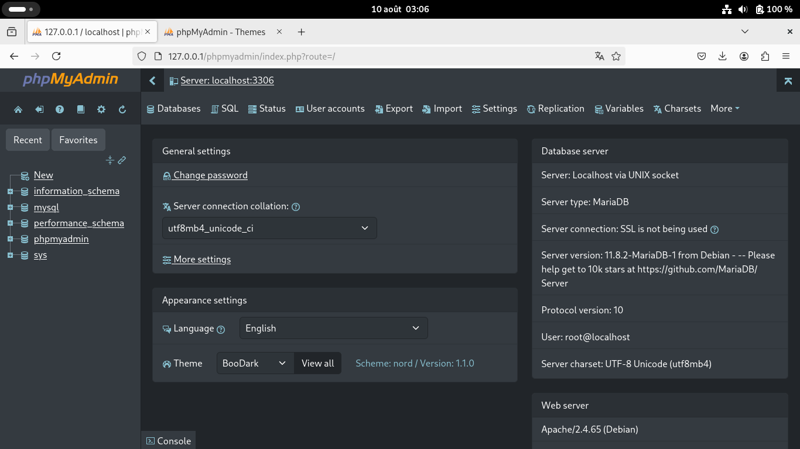
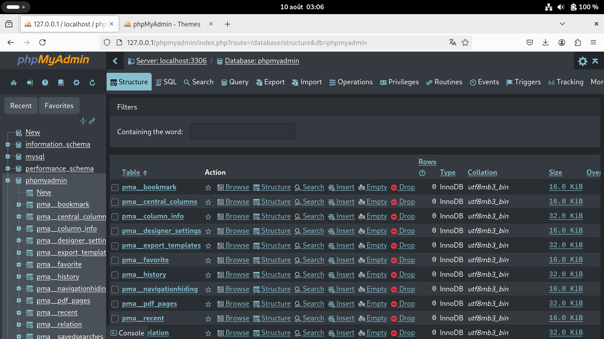
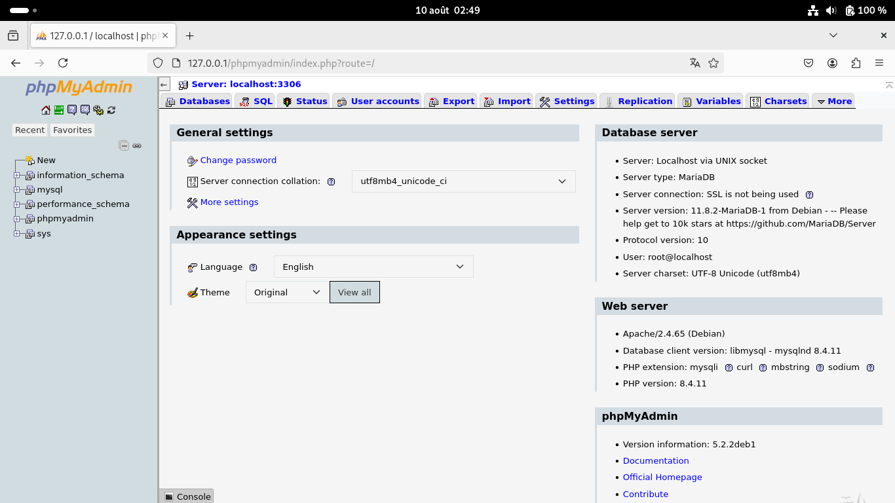
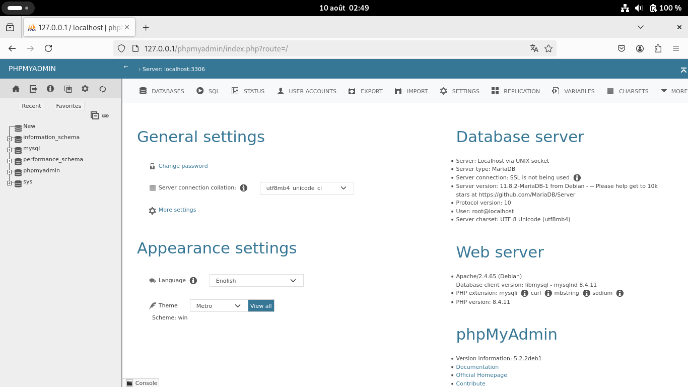
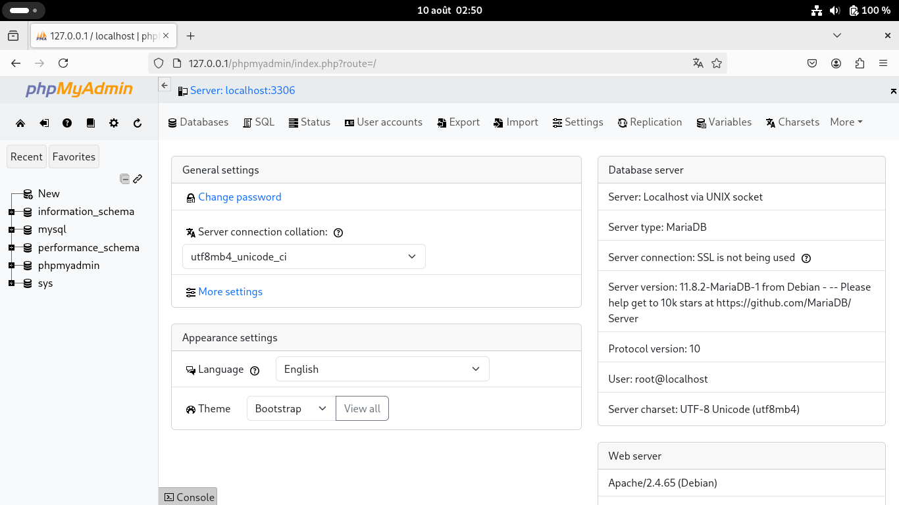

How to install phpMyAdmin on Debian 13 - Trixie ? By APT.
In this post I will explain how to install using APT.
Introduction
First of all, this post has been tested on Debian Trixie on 10/08/2025.
This post is written by a phpMyAdmin team member (williamdes/myself),
I am also the one responsible for the APT package phpmyadmin in Debian, Ubuntu and derivatives. And the Ubuntu PPA for phpmyadmin.
Installing on Debian Trixie
Using the ISO image debian-13.0.0-amd64-netinst.iso and VirtualBox 7.0. After adding my user to the sudo group, I did open a terminal and ran the install command:
Stay up to date
You should setup Debian backports in your APT sources: Debian wiki for backports
I will provide updated versions of phpMyAdmin on this official backports channel. No need to do manual and insecure installations ;)
Install with Apache2
sudo apt install phpmyadmin libapache2-mod-php
Then it asks:
- For the webserver to reconfigure: I checked "apache2".
- If I want to configure the "phpmyadmin" database: I opted for "No". Because the DB server is not yet installed.
You can now access phpMyAdmin from http://localhost/phpmyadmin/.
There is normally no need to reload the apache2 webserver, in case of a 404 error run: sudo service apache2 reload

Install a database server
sudo apt install mariadb-server
Configure phpMyAdmin to the database server
sudo dpkg-reconfigure phpmyadmin
Then it asks:
- If I want to configure the "phpmyadmin" database: I opted for "Yes".
- The connection method: I used "socket".
- The password hashing method: I kept "default".
- The phpMyAdmin database name: I kept "phpmyadmin".
- The phpMyAdmin database user name: I kept "phpmyadmin@localhost".
- The phpMyAdmin database password: Keep blank.
- The database server admin username: I kept "root".
- For the webserver to reconfigure: I kept "apache2".
The values are written to /etc/phpmyadmin/config-db.php you can edit them instead of running dpkg-reconfigure.
You can login on phpMyAdmin from http://localhost/phpmyadmin/ using phpmyadmin as the username, and using the password for the user found in /etc/phpmyadmin/config-db.php.


Allow no password access ?
You might have noticed that you can not access phpMyAdmin using "root" and no password. But there is solutions for this. Ref: StackOverflow answers to allow no password login
I recommend adding a custom config file instead of changing the default config file (/etc/phpmyadmin/config.inc.php):
Create the config file /etc/phpmyadmin/conf.d/no-password.php:
<?php
$i = 1;
$cfg['Servers'][$i]['AllowNoPassword'] = true;
Change the root password
Open the MariaDB terminal by running:
sudo mariadb
Then enter the query:
SET PASSWORD FOR root@localhost = PASSWORD('new_password');
Quit the MariaDB terminal by using CTRL+C
You should be able to login using the password:
mariadb -u root -h 127.0.0.1 -p
If it works, go to http://localhost/phpmyadmin/ and enjoy phpMyAdmin !
Installing more themes
This method works but could make your installed themes go away with each phpMyAdmin update. Sorry, there is no Debian packages for each theme. This is too much work.
Go to phpMyAdmin website - themes. Find one that is compatible with phpMyAdmin 5.2.x
I will be using Boodark Nord 1.1.0 for this example:
wget https://files.phpmyadmin.net/themes/boodark-nord/1.1.0/boodark-nord-1.1.0.zip -O /tmp/theme.zip
cd /usr/share/phpmyadmin/themes/
# If needed: sudo apt-get install unzip -y
unzip /tmp/theme.zip
# Should show boodark-nord with all the other themes
ls -lah
# Cleanup
rm /tmp/theme.zip


Themes included in phpMyAdmin
Original

Metro

Bootstrap
